★ Meet your VIP travellers ★
Benny
Head of Quality ControlSmall, white, fluffy, distinguished. Travels exclusively in a designer bag. Rates every destination on sofas, snacks and attention.
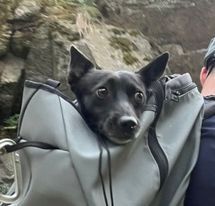
Lapi
Chief Crag OfficerBlack, fast, fearless. Has been to more crags than most climbers, usually by backpack. Rates every destination on sticks, sun and belly rubs.
Mufík
Senior Grumpiness ConsultantElderly black poodle and distinguished gentleman. Has seen it all and has an opinion on everything. Grumbles on the way there, then quietly has the best time of anyone. Secretly the biggest cuddler of the crew. Rates every destination on warm spots, soft rugs and good company.
★ Choose your adventure! ★
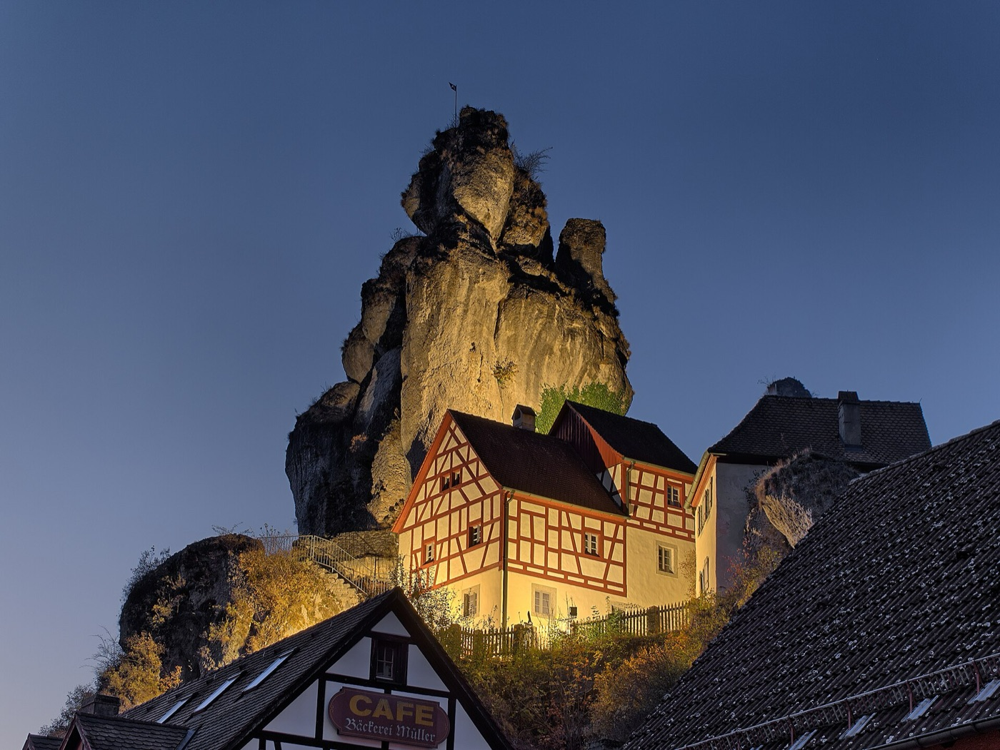
1. Frankenjura
The Climber's Paradise™3 h · dogs ★★★★★
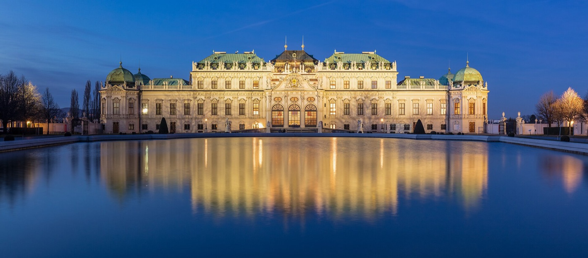
2. Vienna Woods
Imperial Luxury!3.5 h · dogs ★★★★☆
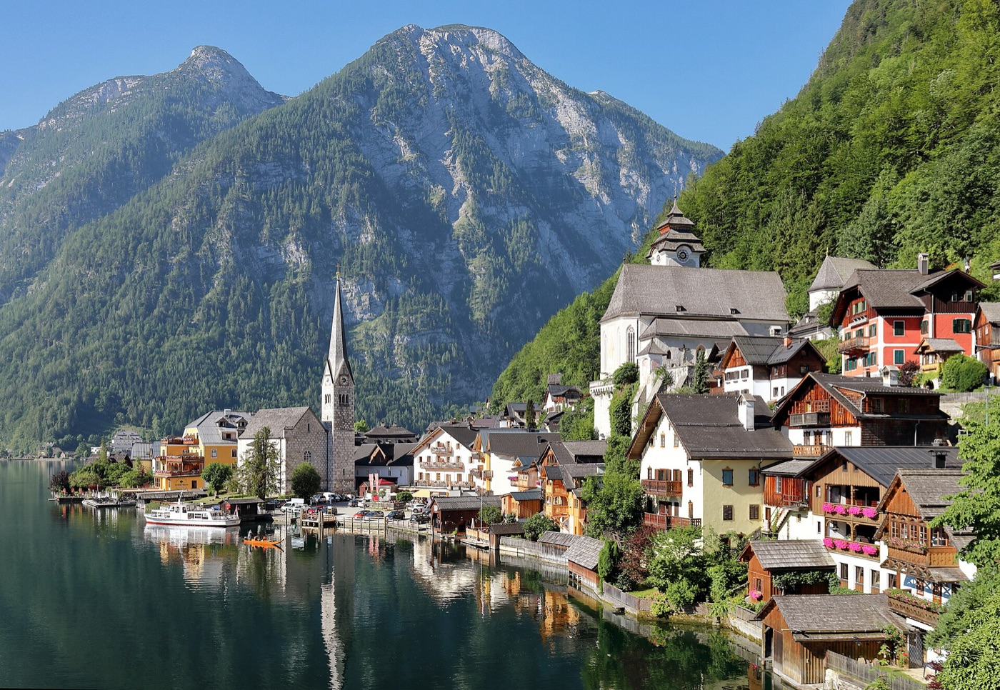
3. Hallstatt
Alpine Postcard Dream!4–4.5 h · dogs ★★★☆☆
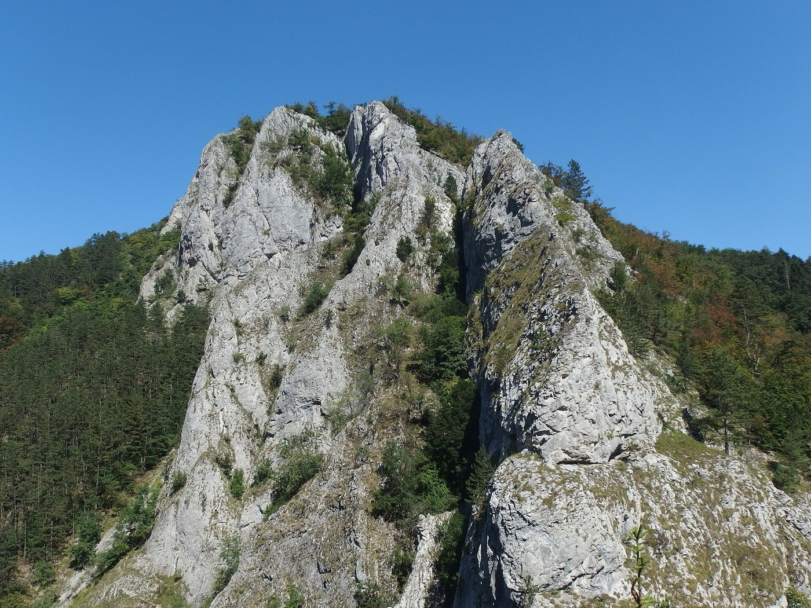
4. Hrádok / Piešťany
Super Saver Sun Deal!4 h · dogs ★★★★☆
Frankenjura, Germany
The Climber's Paradise™ — 10,000 routes. TEN. THOUSAND.
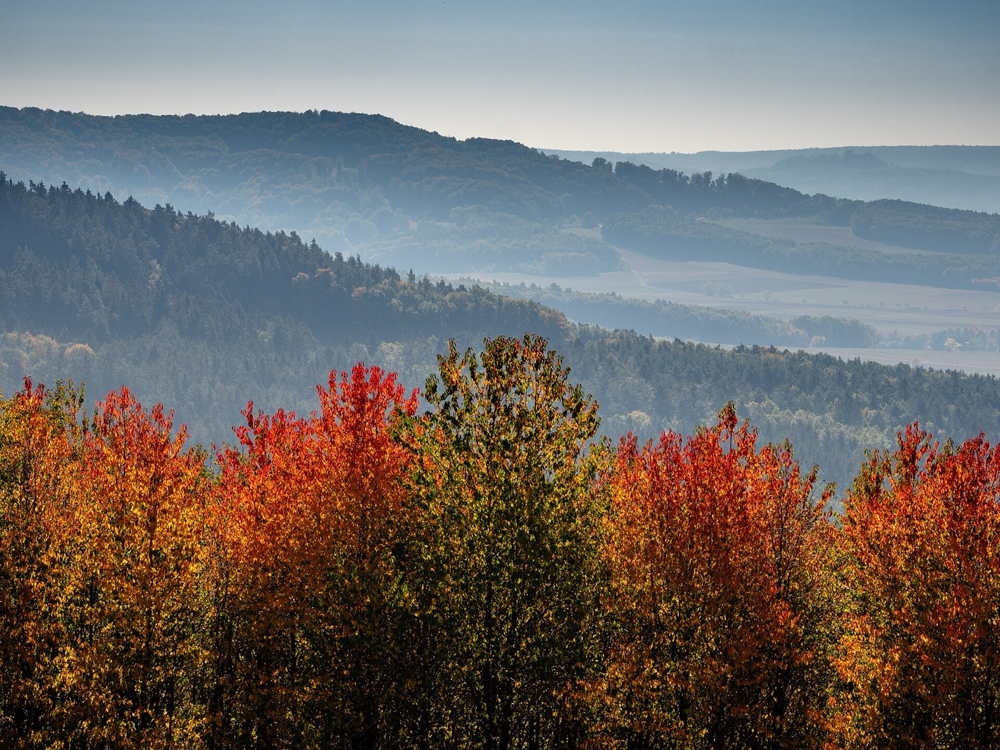
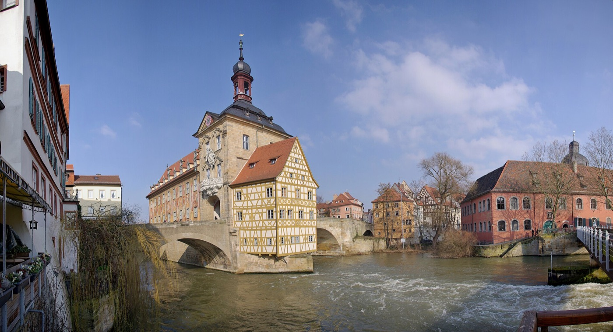
The climbing
One of the biggest sport climbing areas ON THE PLANET: over 10,000 limestone routes, with loads of them in your 4a–6c sweet spot. Approaches take 5–15 minutes. Can't find a sunny, south-facing crag? Impossible. There are simply too many.
But wait, there's more!
- Hiking: loops through river valleys past rock towers and castles perched on cliffs, glowing in autumn colours. Good walks are Pottenstein to Tüchersfeld, and the Gößweinstein viewpoints.
- Bamberg (45 min): one of Germany's prettiest old towns and a UNESCO site. Try the smoked beer (Rauchbier). It tastes like a campfire, in a good way!
- Nuremberg (45 min): a huge castle and the old town.
- Wellness: Obermain Therme (1 h) has very strong saltwater thermal pools, outdoors and steaming. Float like a pretzel in brine!
- Teufelshöhle (Devil's Cave): a dripstone cave right in Pottenstein.
Why you'll love it
- The BEST climbing of all four options, by a mile
- The shortest drive with no motorway tolls
- Cosy villages and cheap, hearty Franconian food and beer
The small print*
- Many crags sit in forest, so in late October they're chilly, damp and slow to dry after rain
- The classic routes are polished (worn slippery) from decades of use
- No big "wow" hike. The walks are lovely rather than jaw-dropping.
Price: about €420–550 per person. Toll-free motorways, the shortest drive and cheap beer leave more money for chalk!
Vienna Woods, Austria
Imperial luxury by night, limestone by day!
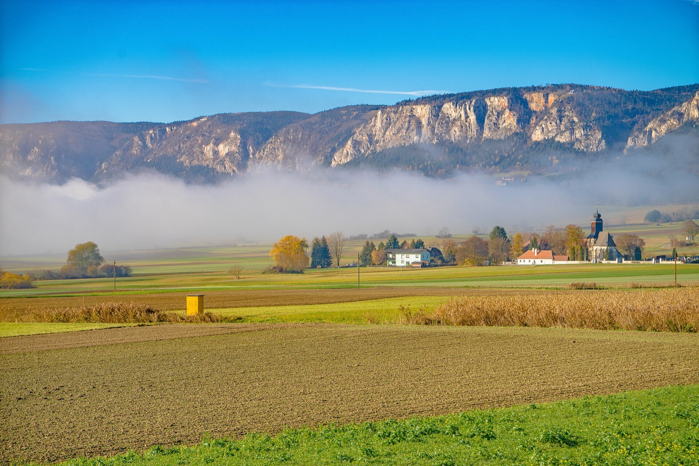
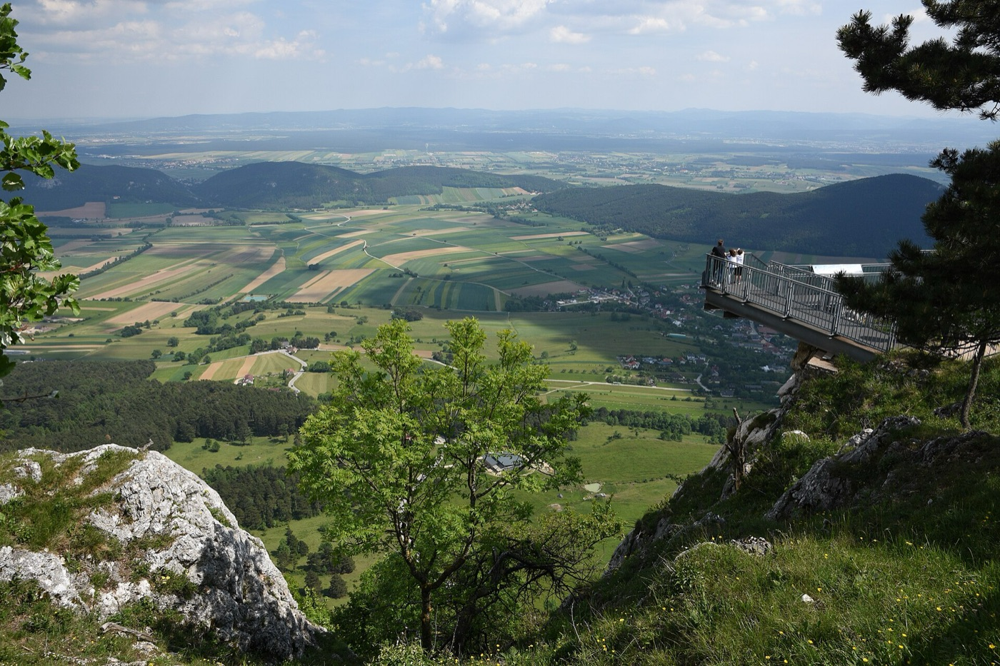
The climbing
- Peilstein: Vienna's classic crag, with around 600 limestone routes, lots of them in easy to mid grades, and short approaches.
- Hohe Wand: sunnier walls facing south and east, which is just right for late autumn. It also has longer multi-pitch routes for the ambitious!
But wait, there's more!
- Vienna (30 min): palaces, coffee houses, cake and markets. A full rainy-day programme, served on silver trays!
- Wellness: Römertherme, a big thermal spa right in Baden. Climb in the morning, soak in the afternoon.
- Hiking: the Hohe Wand plateau with its Skywalk and huge views, plus forest walks in the Vienna Woods.
- Seegrotte: a boat ride on Europe's largest underground lake, in an old mine. Very James Bond.
- Heuriger: cosy wine taverns in the vineyards of Gumpoldskirchen.
Why you'll love it
- The BEST mix of everything. In bad weather you have a capital city, a spa and wine all within 30 minutes.
- Baden is an elegant, walkable base
The small print*
- Peilstein is in forest and polished, much like the Frankenjura
- Higher prices than Germany or Slovakia
- More driving between activities, and Vienna traffic
Price: about €550–720 per person. Austrian hotels and restaurants cost more, and you'll need a motorway vignette (toll sticker) plus dog fees. But: PALACES.
Bad Goisern / Hallstatt, Austria
As seen on a million postcards!
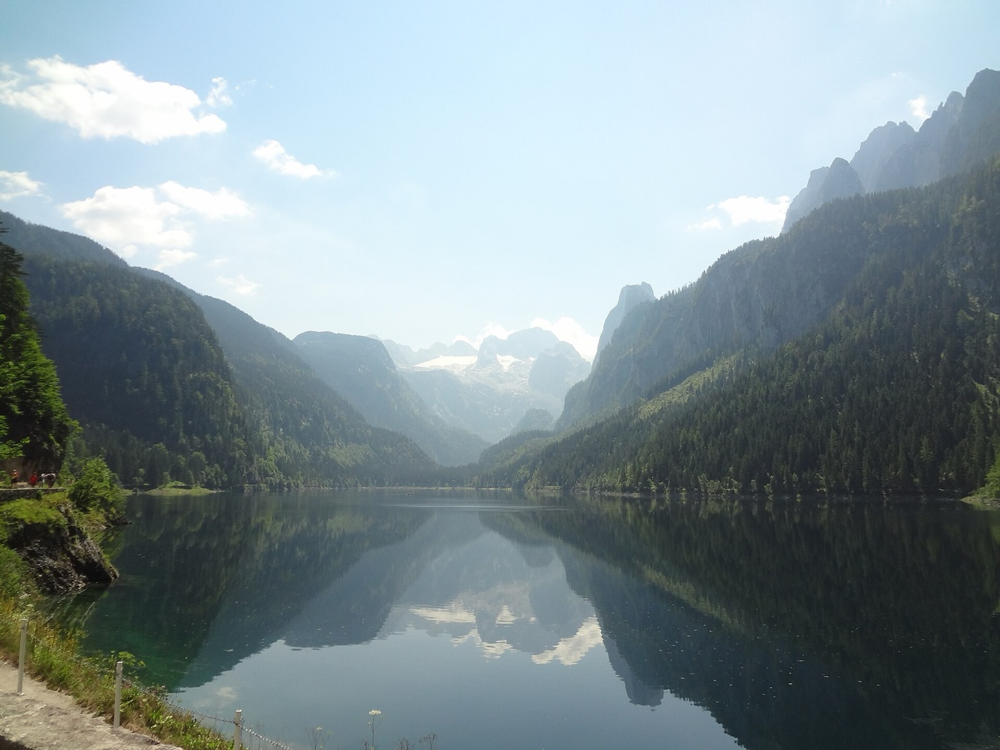
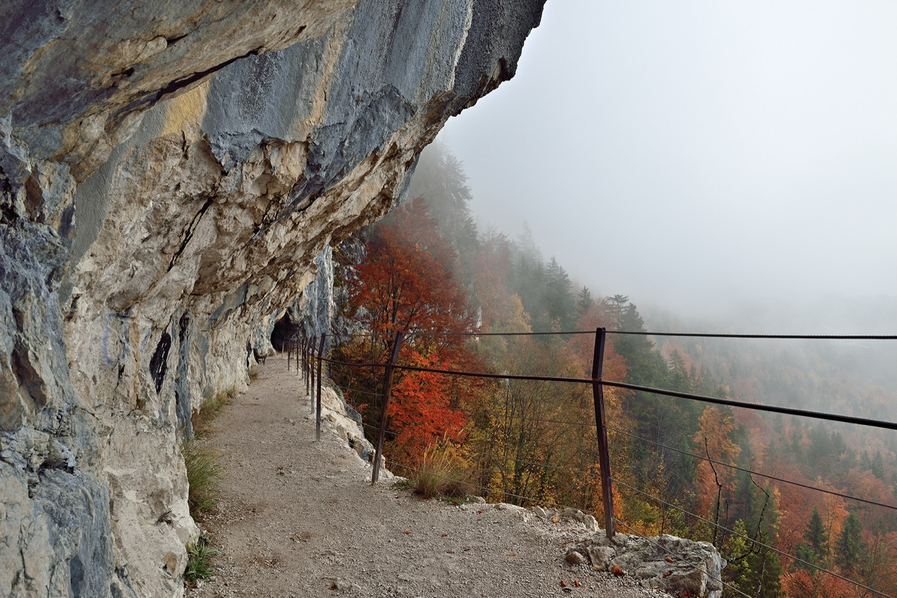
The climbing
Limestone sport climbing in the Echerntal valley right behind Hallstatt, plus smaller crags around Bad Goisern. It's much smaller and less developed than Frankenjura or Hrádok. The secret weapon is via ferratas: climbing routes with fixed steel cables and ladders, like the Echernwand route above Hallstatt. Perfect when it's too cold to stand around belaying!
But wait, there's more!
- Gosausee: an easy lake loop with the Dachstein glacier mirrored in the water. One of the most beautiful spots in Austria. Your phone storage will not survive.
- Ewige Wand (Bad Goisern): a path carved into a cliff face high above the valley.
- Hallstatt: the famous postcard village on the lake. Go early in the morning, before the tour buses arrive.
- Salt mine: the oldest salt mine in the world, with wooden miners' slides inside and a Skywalk platform above the village.
- Bad Ischl (20 min): Emperor Franz Joseph's summer resort, with the imperial villa and the legendary Zauner pastry shop.
- Wellness: Salzkammergut Therme in Bad Ischl (20 min).
Why you'll love it
- By FAR the most spectacular scenery: real Alps, lakes and a glacier
- Via ferratas: a climbing-like adventure the other places don't have
- Plenty to do when it's too cold or wet to climb
The small print*
- The weakest sport climbing of the four. Fewer routes, and the deep valleys get little sun in late October, so the rock is cold.
- Many lifts and caves close for the season around late October (e.g. the Dachstein cable car and ice caves). Check what's still running.
- Higher chance of cold, rain or early snow than the other options
- Hallstatt is overrun with tourists even out of season
- The longest drive
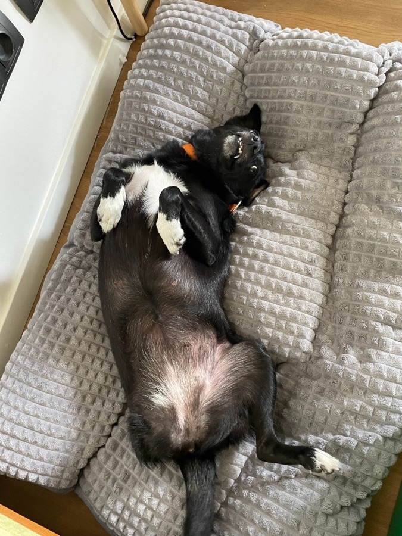
Price: about €550–720 per person. Austrian prices, the longest drive and dog fees. Staying in Hallstatt itself costs even more, so Bad Goisern is the smart move.
Hrádok / Piešťany, Slovakia
Sun! Spas! Castles! At HALF the price!
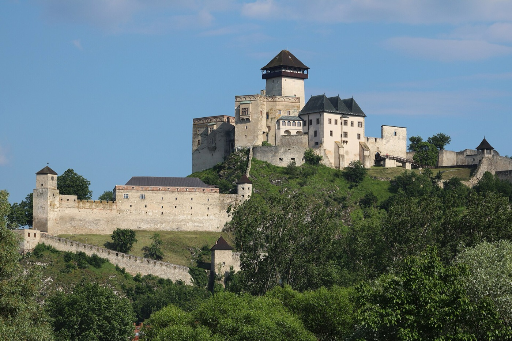
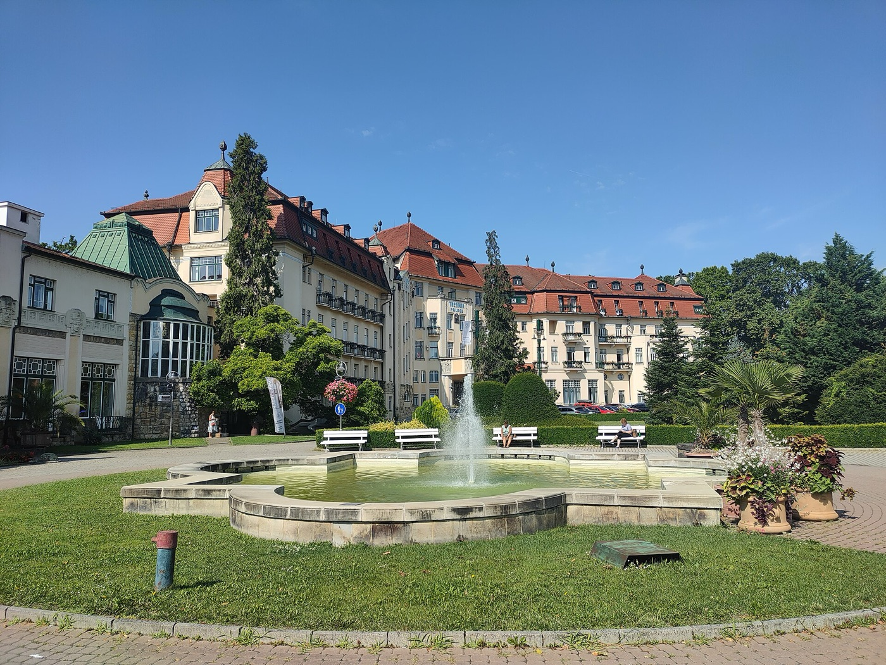
The climbing
- Hrádok: Slovakia's most popular sport crag. It's limestone, faces south and soaks up sun, so it's the warmest rock on this list in late autumn. Short approach, and the grades suit you perfectly.
- Manín gorge / Súľov (1 h): a dramatic limestone gorge with more sport routes, easy to combine with a hike.
But wait, there's more!
- Wellness in Piešťany: a classic spa town with thermal water, healing mud and a whole spa island. The best wellness on this list, at Slovak prices!
- Castles: Trenčín, the clifftop ruins of Beckov, and Čachtice, home of the "Blood Countess" Báthory, who allegedly bathed in blood. (Dramatic, but please use the spa instead.)
- Hiking: the Súľov rocks, a fairy-tale maze of rock towers, arches and windows, plus Manín gorge. For a proper mountain day, Malá Fatra is 1.5 h away.
Why you'll love it
- The WARMEST climbing, because Hrádok is sunny and faces south
- The CHEAPEST option by far
- Top-quality spas
The small print*
- Hrádok gets crowded and polished on holidays (such as 1 November)
- The base towns are less charming than Bamberg or Baden
- One of the longer drives
Price: about €300–420 per person. Accommodation, food and spa cost roughly half of Austrian prices, which more than pays for the longer drive and the Slovak vignette.
| Drive | Climbing | Hiking | Rainy day | Dogs | Price p.p. | |
|---|---|---|---|---|---|---|
| 1. Frankenjura | 3 h | ★★★ | ★★ | ★★ | ★★★★★ | €420–550 |
| 2. Vienna Woods | 3.5 h | ★★ | ★★ | ★★★ | ★★★★☆ | €550–720 |
| 3. Bad Goisern / Hallstatt | 4–4.5 h | ★ (+ via ferratas) | ★★★ | ★★ | ★★★☆☆ | €550–720 |
| 4. Hrádok / Piešťany | 4 h | ★★★ (warmest) | ★★ | ★★★ (spa) | ★★★★☆ | €300–420 |
Prices are rough estimates per person for 5 nights: shared apartment or mid-range hotel, eating out most of the time, one spa visit or attraction, with fuel and vignettes split three ways.
Our travel consultant recommends
- Climbing first? Frankenjura. It's also the easiest with the dogs.
- Worried about cold rock? Hrádok: sunny, south-facing and the cheapest.
- Want a bit of everything? Vienna Woods.
- Scenery over climbing? Bad Goisern / Hallstatt.